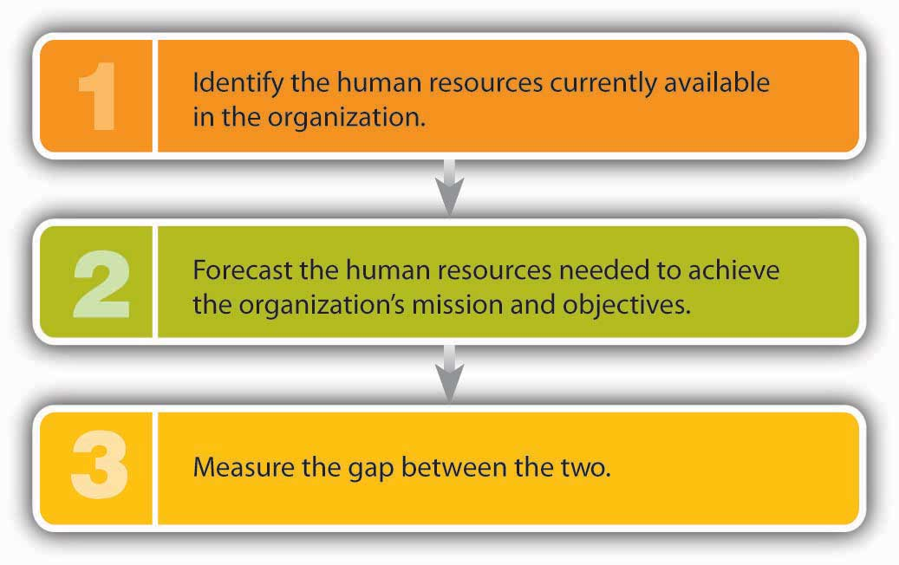

Employees at Starbucks are vital to the company’s success. They are its public face, and every dollar of sales passes through their hands.Howard Schultz and Dori Jones Yang, Pour Your Heart into It: How Starbucks Built a Company One Cup at a Time (New York: Hyperion, 1997), 125. According to Howard Schultz, they can make or break the company. If a customer has a positive interaction with an employee, the customer will come back. If an encounter is negative, the customer is probably gone for good. That’s why it’s crucial for Starbucks to recruit and hire the right people, train them properly, motivate them to do their best, and encourage them to stay with the company. Thus, the company works to provide satisfying jobs, a positive work environment, appropriate work schedules, and fair compensation and benefits. These activities are part of Starbucks’s strategy to deploy human resources in order to gain competitive advantage. The process is called human resource management (HRM)All actions that an organization takes to attract, develop, and retain quality employees., which consists of all actions that an organization takes to attract, develop, and retain quality employees. Each of these activities is complex. Attracting talented employees involves the recruitment of qualified candidates and the selection of those who best fit the organization’s needs. Development encompasses both new-employee orientation and the training and development of current workers. Retaining good employees means motivating them to excel, appraising their performance, compensating them appropriately, and doing what’s possible to retain them.
How does Starbucks make sure that its worldwide retail locations are staffed with just the right number of committed employees? How does Walt Disney World ensure that it has enough qualified “cast members” to provide visitors with a “magical” experience? How does Norwegian Cruise Lines make certain that when the Norwegian Dawn pulls out of New York harbor, it has a complete, fully trained crew on board to feed, entertain, and care for its passengers? Managing these tasks is a matter of strategic human resource planningProcess of developing a plan for satisfying an organization’s human resource needs.—the process of developing a plan for satisfying an organization’s human resources (HR) needs.
A strategic HR plan lays out the steps that an organization will take to ensure that it has the right number of employees with the right skills in the right places at the right times. HR managers begin by analyzing the company’s mission, objectives, and strategies. Starbucks’s objectives, for example, include the desire to “develop enthusiastically satisfied customers”“Our Starbucks Mission Statement,” Starbucks, http://www.starbucks.com/about-us/company-information/mission-statement (accessed October 8, 2011). as well as to foster an environment in which employees treat both customers and each other with respect. Thus, the firm’s HR managers look for people who are “adaptable, self-motivated, passionate, creative team members.”“25 Top MBA Employers,” CNNMoney, http://money.cnn.com/galleries/2007/fortune/0704/gallery.MBA_employers.fortune/14.html (accessed October 8, 2011). Likewise, Disney’s overall objectives include not only making all visitors feel as if they’re special in a special place but also ensuring that employees’ appearance reflects a special image (there’s even a forty-seven-page book on the subject).“How Disney Puts the Magic in Recruiting,” Vault, http://www.vault.com/nr/newsmain.jsp?nr_page=3&ch_id=400&article_id=51875&cat_id=1083 (accessed May 6, 2006). Disney looks for people who best fulfill these job requirements. The main goal of Norwegian Cruise Lines—to lavish passengers with personal attention—determines not only the type of employee desired (one with exceptionally good customer-relation skills and a strong work ethic) but also the number needed (one for every two passengers on the Norwegian Dawn).“Overview of Careers on Cruise Ships,” Career Prospects in Virginia, http://www3.ccps.virginia.edu/career_prospects/briefs/PS/SummaryCruise.shtml (accessed May 6, 2006).
To develop an HR plan, HR managers must obviously be knowledgeable about the jobs that the organization needs performed. They organize information about a given job by performing a job analysisIdentification of the tasks, responsibilities, and skills of a job, as well as the knowledge and abilities needed to perform it. to identify the tasks, responsibilities, and skills that it entails, as well as the knowledge and abilities needed to perform it. Managers also use the information collected for the job analysis to prepare two documents:
Once they’ve analyzed the jobs within the organization, HR managers must forecast future hiring (or firing) needs. This is the three-step process summarized in Figure 7.1 "How to Forecast Hiring (and Firing) Needs".
Figure 7.1 How to Forecast Hiring (and Firing) Needs
Starbucks, for instance, might find that it needs three hundred new employees to work at stores scheduled to open in the next few months. Disney might determine that it needs two thousand new cast members to handle an anticipated surge in visitors. The Norwegian Dawn might be short two dozen restaurant workers because of an unexpected increase in reservations.
After calculating the disparity between supply and future demand, HR managers must draw up plans for bringing the two numbers into balance. If the demand for labor is going to outstrip the supply, they may hire more workers, encourage current workers to put in extra hours, subcontract work to other suppliers, or introduce labor-saving initiatives. If the supply is greater than the demand, they may deal with overstaffing by not replacing workers who leave, encouraging early retirements, laying off workers, or (as a last resort) firing workers.
Armed with information on the number of new employees to be hired and the types of positions to be filled, the HR manager then develops a strategy for recruiting potential employees. RecruitingProcess of identifying suitable candidates and encouraging them to apply for openings in the organization. is the process of identifying suitable candidates and encouraging them to apply for openings in the organization.
Before going any further, we should point out that, in recruiting and hiring, managers must comply with antidiscrimination laws; violations can have legal consequences. DiscriminationPractice of treating a person unfairly on the basis of a characteristic unrelated to ability. occurs when a person is treated unfairly on the basis of a characteristic unrelated to ability. Under federal law, it’s illegal to discriminate in recruiting and hiring on the basis of race, color, religion, sex, national origin, age, or disability. (The same rules apply to other employment activities, such as promoting, compensating, and firing.)The U.S. Equal Employment Opportunity Commission, “Discriminatory Practices,” http://www.eeoc.gov/laws/practices/index.cfm (accessed October 8, 2011). The Equal Employment Opportunity Commission (EEOC)Federal agency in charge of enforcing federal laws on employment discrimination. enforces a number of federal employment laws, including the following:
The first step in recruiting is to find qualified candidates. Where do you look for them, and how do you decide whether they’re qualified? Let’s start with the second part of the question first. A qualified person must be able to perform the duties listed in the job description and must possess the skills, knowledge, and abilities detailed in the job specification. In addition, he or she must be a good “fit” for the company. A Disney recruiter, for example, wants a candidate who fits a certain image—someone who’s clean-cut and “wholesome” looking. The same recruiter might also favor candidates with certain qualities—someone who has a “good attitude,” who’s a “go-getter” and a “team player,” and who’s smart, responsible, and stable.Bob Nelson and Peter Economy, Managing for Dummies, 2nd ed. (New York: Wiley, 2003), 60.
Where do you find people who satisfy so many criteria? Basically, you can look in two places: inside and outside your own organization. Both options have pluses and minuses. Hiring internally sends a positive signal to employees that they can move up in the company—a strong motivation tool and a reward for good performance. In addition, because an internal candidate is a known quantity, it’s easier to predict his or her success in a new position. Finally, it’s cheaper to recruit internally. On the other hand, you’ll probably have to fill the promoted employee’s position. Going outside gives you an opportunity to bring fresh ideas and skills into the company. In any case, it’s often the only alternative, especially if no one inside the company has just the right combination of skills and experiences. Entry-level jobs usually have to be filled from the outside.
Whether you search inside or outside the organization, you need to publicize the opening. If you’re looking internally in a small organization, you can alert employees informally. In larger organizations, HR managers generally post openings on bulletin boards (often online) or announce them in newsletters. They can also seek direct recommendations from various supervisors.
Recruiting people from outside is more complicated. It’s a lot like marketing a product to buyers: in effect, you’re marketing the virtues of working for your company. Starbucks uses the following outlets to advertise openings:
When asked what it takes to attract the best people, Starbucks’s senior executive Dave Olsen replied, “Everything matters.” Everything Starbucks does as a company bears on its ability to attract talent. Accordingly, everyone is responsible for recruiting, not just HR specialists. In fact, the best source of quality applicants is the company’s own labor force.David Lee, “Becoming a Talent Magnet: Your First Task as a Recruiter: Recruit Senior Management onto Your Team,” http://www.humannatureatwork.com/Recruiting-Employees.htm (accessed October 8, 2011).
Recruiting gets people to apply for positions, but once you’ve received applications, you still have to select the best candidate—another complicated process. The selectionProcess of gathering information on candidates, evaluating their qualifications, and choosing the right one. process entails gathering information on candidates, evaluating their qualifications, and choosing the right one. At the very least, the process can be time-consuming—particularly when you’re filling a high-level position—and often involves several members of an organization.
Let’s examine the selection process more closely by describing the steps that you’d take to become a special agent for the Federal Bureau of Investigation (FBI).The information in this section comes from two sources: Federal Bureau of Investigation, “Jobs: Special Agents,” http://www.fbijobs.gov/ (accessed October 9, 2011); “Special Agent Application and Hiring Process,” Federal Bureau of Investigations, http://www.fbijobs.gov/112.asp, (accessed October 9, 2011). Most business students don’t generally aspire to become FBI agents, but the FBI is quite interested in business graduates—especially if you have a major in accounting or finance. With one of these backgrounds, you’ll be given priority in hiring. Why? Unfortunately, there’s a lot of white-collar crime that needs to be investigated, and people who know how to follow the money are well suited for the task.
The first step in becoming a gun-toting accountant is, obviously, applying for the job. Don’t bother unless you meet the minimum qualifications: you must be a U.S. citizen, be age twenty-three to thirty-seven, be physically fit, and have a bachelor’s degree. To provide factual information on your education and work background, you’ll submit an applicationDocument completed by a job applicant that provides factual information on the person’s education and work background., which the FBI will use as an initial screening tool.
Next comes a battery of tests (a lot more than you’d take in applying for an everyday business position). Like most organizations, the FBI tests candidates on the skills and knowledge entailed by the job. Unlike most businesses, however, the FBI will also measure your aptitude, evaluate your personality, and assess your writing ability. You’ll have to take a polygraph (lie-detector) test to determine the truthfulness of the information you’ve provided, uncover the extent of any drug use, and disclose potential security problems.
If you pass all these tests (with sufficiently high marks), you’ll be granted an interviewFormal meeting during which the employer learns more about an applicant and the applicant learns more about the prospective employer.. It serves the same purpose as it does for business recruiters: it allows the FBI to learn more about you and gives you a chance to learn more about your prospective employer and your possible future in the organization. The FBI conducts structured interviews—a series of standard questions. You’re judged on both your answers and your ability to communicate orally.
Let’s be positive and say you passed the interview. What’s next? You still have to pass a rigorous physical examination (including a drug test), as well as background and reference checks. Given its mission, the FBI sets all these hurdles a little higher than the average retail clothing chain. Most businesses will ask you to take a physical exam, but you probably won’t have to meet the fitness standards set by the FBI. Likewise, many businesses check references to verify that applicants haven’t lied about (or exaggerated) their education and work experience. The FBI goes to great lengths to ensure that candidates are suitable for law-enforcement work.
The last stage in the process is out of your control. Will you be hired or rejected? This decision is made by one or more people who work for the prospective employer. For a business, the decision maker is generally the line manager who oversees the position being filled. At the FBI, the decision is made by a team at FBI headquarters. If you’re hired as a special agent, you’ll spend twenty-one weeks of intensive training at the FBI Academy in Quantico, Virginia.
Though most people hold permanent, full-time positions, there’s a growing number of individuals who work at temporary or part-time jobs. Many of these are contingent workersTemporary or part-time worker hired to supplement a company’s permanent workforce. hired to supplement a company’s permanent workforce. Most of them are independent contractors, consultants, or freelancers who are paid by the firms that hire them. Others are on-call workers who work only when needed, such as substitute teachers. Still others are temporary workers (or “temps”) who are employed and paid by outside agencies or contract firms that charge fees to client companies.
The use of contingent workers provides companies with a number of benefits. Because they can be hired and fired easily, employers can better control labor costs. When things are busy, they can add temps, and when business is slow, they can release unneeded workers. Temps are often cheaper than permanent workers, particularly because they rarely receive costly benefits. Employers can also bring in people with specialized skills and talents to work on special projects without entering into long-term employment relationships. Finally, companies can “try out” temps: if someone does well, the company can offer permanent employment; if the fit is less than perfect, the employer can easily terminate the relationship. There are downsides to the use of contingent workers, including increased training costs and decreased loyalty to the company. Also, many employers believe that because temps are usually less committed to company goals than permanent workers, productivity suffers.
What about you? Does temporary work appeal to you? On the plus side, you can move around to various companies and gain a variety of skills. You can see a company from the inside and decide up front whether it’s the kind of place you’d like to work at permanently. If it is, your temporary position lets you showcase your skills and talents and grab the attention of management, which could increase the likelihood you’ll be offered a permanent position. There are also some attractive lifestyle benefits. You might, for example, work at a job or series of jobs for, say, ten months and head for the beach for the other two. On the other hand, you’ll probably get paid less, receive no benefits, and have no job security. For most people, the idea of spending two months a year on the beach isn’t that appealing.
You’re the chairperson of the management department at your college. Describe the steps you’d take to ensure that your department has enough qualified faculty to meet its needs.